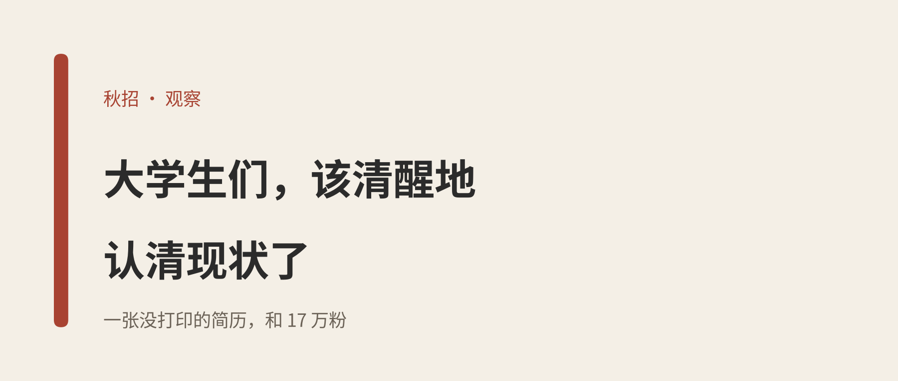
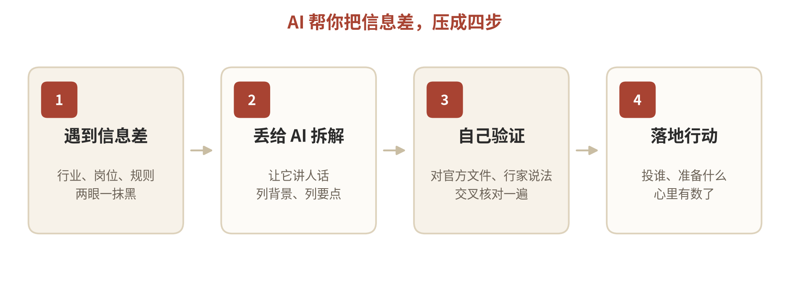

图：本文自制封面
昨天刷到一条视频。
一个学学前教育的姑娘，去学校秋招会，手里一张简历都没打印。
她走到每个展位，先把手机举起来：抖音 10 万粉，B 站 17 万粉。
HR 不问四六级了，争着加她微信，开价 6000 到 8000。
我本人还在上学，刷完这条，半天没缓过来。
同一场秋招，有人抱着一沓证书没人理，有人亮一下手机，对面就把价报了。
她凭的不是专业，
是被看见的能力。
— 01 —
简历，早就换了副面孔
以前的简历，拼的是这些：
| 以前的简历 | 现在的简历 |
| 英语四六级 | XX 平台账号 XX 万粉 |
| 几段实习经历 | 做过 XX 产品 |
| 在校任职 XX | 手上有批真实用户 |
| — | 会用 AI |
这不是段子，是正在发生的事。文凭还是那张文凭，但用人单位开始为「别的东西」付钱了。
— 02 —
别把路走成一条
写这些不是劝你别学习、别考研、别考证。该过的关，一个都得过。
是别把所有空闲，都押在同一条路上。
课余顺手做点自媒体，就算最后没做起来，剪辑、表达、跟陌生人打交道，这些能力也实打实长在了你身上。
账号可以黄，
本事不会。
— 03 —
信息差，比你想的离谱得多
这个时代，信息差是真离谱。
同一个学校、同一个专业，有人秋招前就摸清了哪些行业在招人、岗位到底要什么；有人直到散场，都没投出一份简历。差距不在智商，在谁先知道。

图：用 AI 缩短信息差的四步
不会搜的，问它；看不懂的，让它讲人话；不知道从哪下手的，让它列步骤。以前要托关系、碰运气才问得到的信息，现在张嘴就有。
AI，是普通人打破信息差的唯一途径。
— 04 —
我自己，就是个失败样本
先交个底：我的自媒体没做成。抖音封过，B 站也封过，现在就剩公众号 2.9 万粉，也就一般般。
但 AI 我用得还行。前段时间，我还反过来指导了我们专业课的老师。
所以你看，路不止一条。走不通那条，不代表你就输了。
那天看完视频，我就想说一句话：
大学生们，
该清醒地认清现状了。
文凭要考，路也别只留一条。工具就摆在那，用不用，随你。